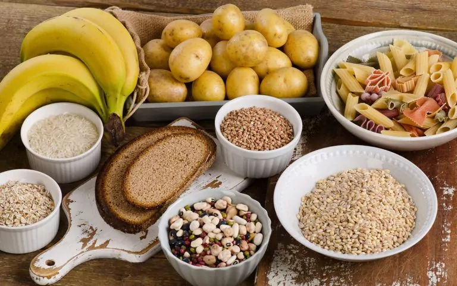
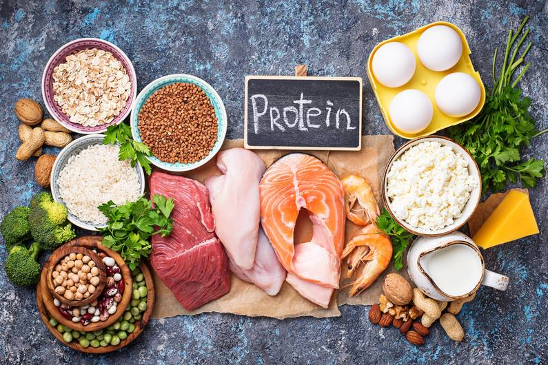
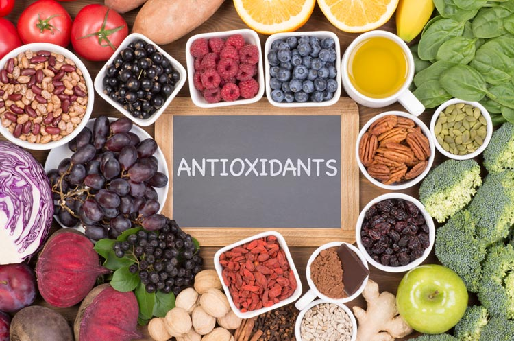
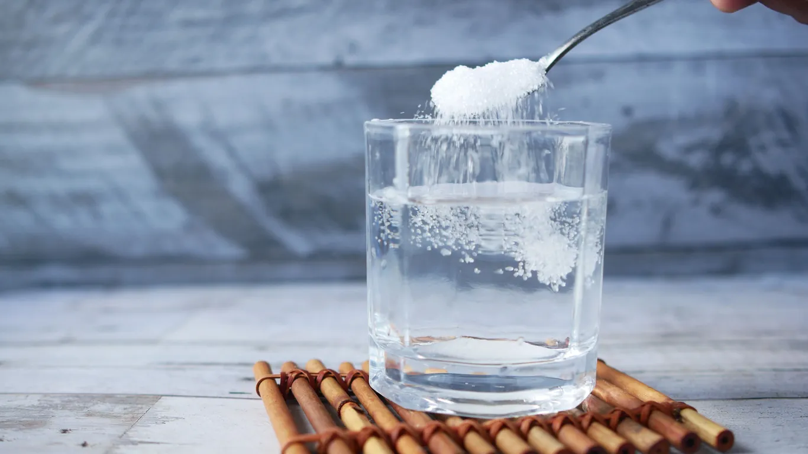

In wie weit spielt die Ernährung eine Rolle im Hyrox Training?
Die Ernährung spielt eine entscheidende Rolle beim Hyrox-Training, da sie den Körper mit der nötigen Energie und den Nährstoffen versorgt, um sowohl während des Trainings als auch im Wettkampf die bestmögliche Leistung zu erbringen. Da Hyrox eine Kombination aus Kraft- und Ausdaueranforderungen darstellt, ist eine ausgewogene Ernährung der Schlüssel, um Kraft aufzubauen, Ausdauer zu steigern, die Regeneration zu fördern und Verletzungen vorzubeugen.
Um die Auswirkungen der Ernährung zu verdeutlichen sind im Folgenden die vier Wichtigsten Punkte aufgelistet:
1. Ernergieversorgung
Ein Hyrox-Training ist sehr intensiv und fordert den Körper in mehrfacher Hinsicht. Eine ausreichende Energiezufuhr ist unerlässlich, um den hohen Kalorienbedarf während der Workouts zu decken.
Kohlenhydrate sind die Hauptenergiequelle für intensive Workouts und lange Ausdauerläufe. Eine ausreichende Aufnahme von komplexen Kohlenhydraten wie Haferflocken, Vollkornprodukten, Reis oder Kartoffeln ist wichtig, um die Glykogenspeicher in den Muskeln aufzufüllen. Diese Speicher liefern die notwendige Energie, um intensive Trainingseinheiten durchzuhalten und Spitzenleistungen zu erbringen.
Gesunde Fette wie Avocados, Nüsse, Olivenöl und Fisch liefern zusätzliche, langanhaltende Energie, die besonders bei längeren Trainingseinheiten wichtig ist. Sie unterstützen außerdem die Hormonproduktion und das Immunsystem.

2. Muskelaufbau und -erhalt
Da Hyrox viel Krafttraining beinhaltet, ist die Zufuhr von ausreichend Protein entscheidend, um den Muskelaufbau zu unterstützen und Muskelabbau zu verhindern.
Proteine liefern die Bausteine (Aminosäuren) für den Muskelaufbau und die Reparatur von Muskelgewebe, das während des Trainings beansprucht wird. Eine hohe Proteinzufuhr (ca. 1,6–2,2 g Protein pro Kilogramm Körpergewicht) hilft dabei, Muskeln zu erhalten und aufzubauen. Gute Proteinquellen sind mageres Fleisch, Fisch, Eier, Hülsenfrüchte, Quark und Proteinshakes.
Es ist besonders wichtig, nach intensiven Trainingseinheiten zeitnah (innerhalb von 30-60 Minuten) Protein zu konsumieren, um die Muskelerholung zu maximieren. Kombiniere dies mit Kohlenhydraten, um die Glykogenspeicher aufzufüllen.

3. Regeneration und Verletzungsprävention
Eine gute Ernährung fördert die Regeneration und hilft, Verletzungen vorzubeugen, die durch intensives Training auftreten können.
Mikronährstoffe wie Vitamin C, D, Magnesium und Kalzium sind essenziell für die Erholung, die Knochengesundheit und die Reparatur von Gewebe. Eine ausgewogene Ernährung mit viel Obst und Gemüse hilft, den Körper mit diesen Nährstoffen zu versorgen.
Antioxidantien aus Früchten (z.B. Beeren), grünem Blattgemüse und Nüssen helfen, den oxidativen Stress zu reduzieren, der durch harte Trainingseinheiten entsteht, und fördern so die schnellere Regeneration.

4. Dehydration
Mit zunehmendem Wassermangel dickt das Blut ein, die Fließgeschwindigkeit verringert sich, was wiederum die Versorgung mit Sauerstoff und Nährstoffen einschränkt. Um Flüssigkeit zu sparen, wird die Ausscheidung über die Nieren eingeschränkt, wodurch mehr Giftstoffe im Körper verbleiben.
Trinke ausreichend Wasser während des Tages und besonders vor, während und nach dem Training. Ein Flüssigkeitsmangel kann die Leistungsfähigkeit stark beeinträchtigen, da bereits eine leichte Dehydration zu Muskelermüdung und Konzentrationsverlust führen kann.
Bei intensivem Training werden Elektrolyte (wie Natrium, Kalium und Magnesium) über den Schweiß ausgeschieden. Um den Elektrolythaushalt zu unterstützen, kannst du Elektrolytgetränke oder Nahrung wie Bananen, Nüsse und grünes Gemüse konsumieren.
